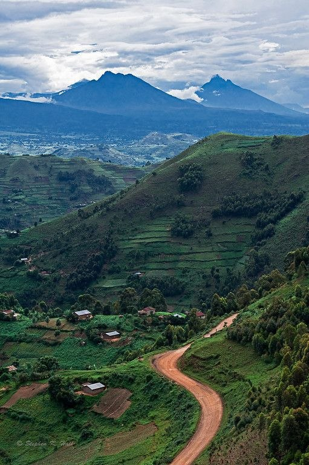
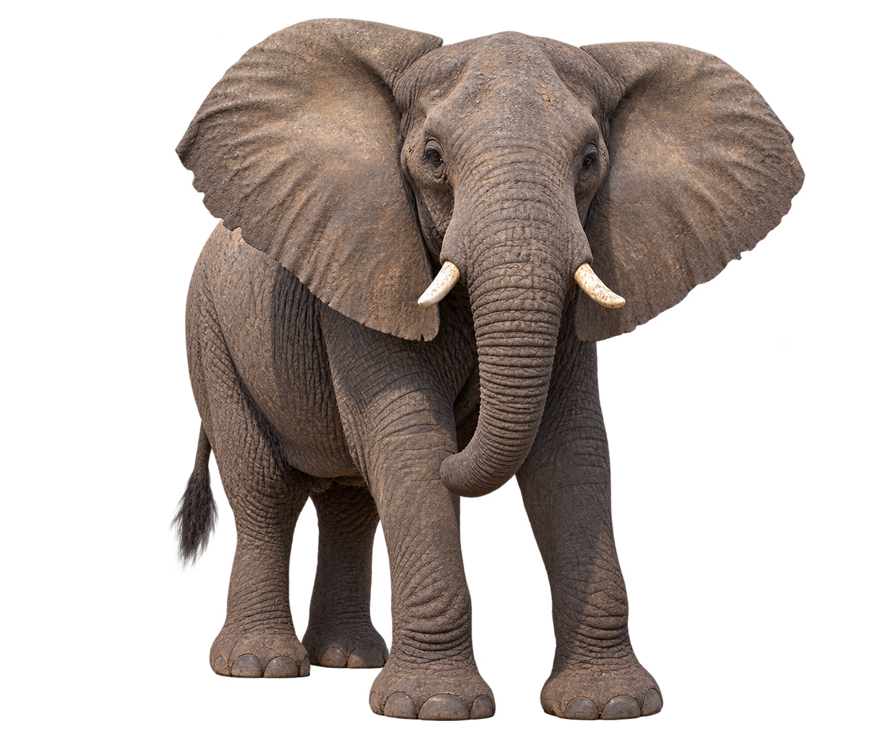
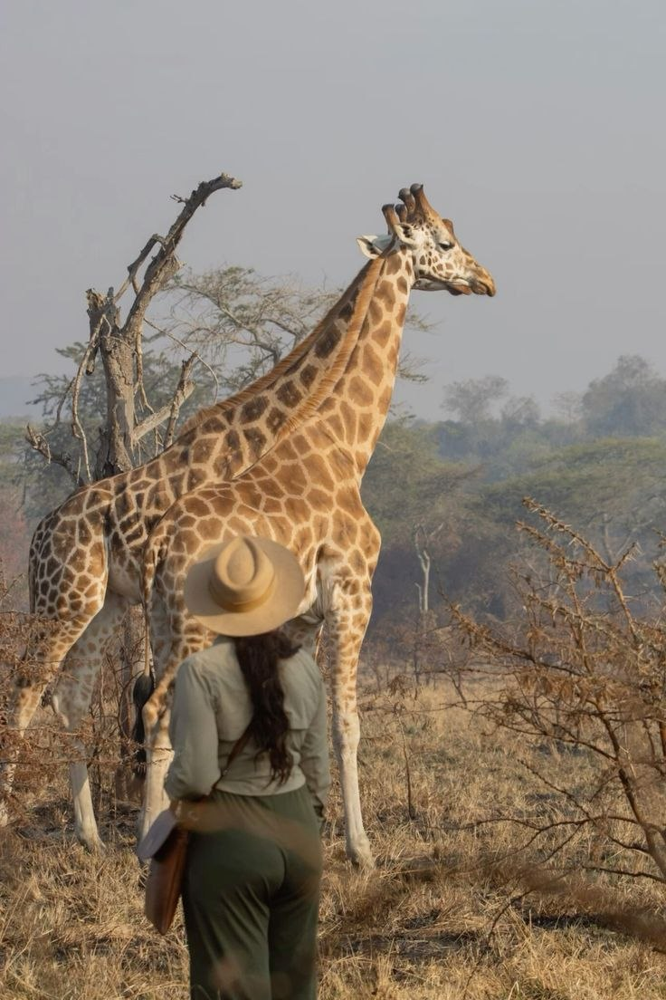
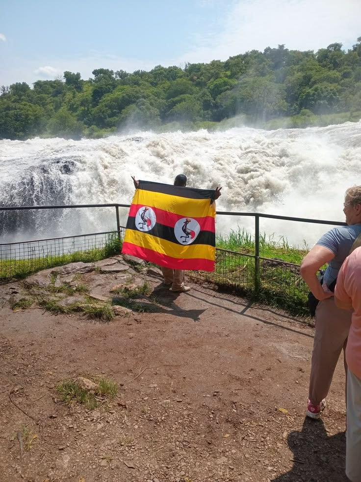

A little closer
to the wild.
Wide-open landscapes. Beautiful detours.
And the kind of moments you come home for.
Somewhere between
the ordinary & the unforgettable.
Not just places.
Feelings.
That first glimpse of the Nile. The hush before a wildlife encounter. A road that makes you forget your phone.
Go a little further with K2 Tours & Travel Uganda. From shared road trips to your own private escape, let’s turn your next “one day” into a journey.
Make it your kind of adventure ↗Where will you
feel alive?
Waterfalls or wide-open wilderness?
Find the scenery that speaks to you.
A little inspiration for your journey. Routes, activities and availability are confirmed when you enquire.
Big moments.
Even bigger
memories.
Out here, the world feels different. Trade the usual view for open skies, wild encounters and stories worth telling.
Take me to the wild ↗
A little closer to nature.A little more yourself.


you’ll bring home! ↗
The best journeys
feel a little
more personal.
Bring your friends. Bring your curiosity. We’ll help you work out the journey. K2 brings together road-trip energy and the freedom to explore your way.
Get together. Get out there.
Ask about group adventures and road trips.
Your trip. Your own vehicle.
Private chauffeur-driven hire, from 4WDs and vans to larger group vehicles.
From touchdown to adventure.
Ask about airport transfers and transport for your plans.
More moments.
Less scrolling.
So, where
are we going?
Tell us what you’re dreaming of.
Let’s make room for a little adventure.